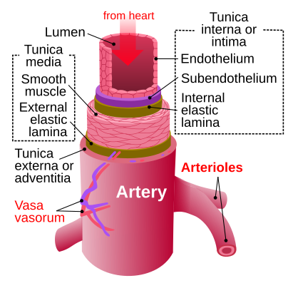

Что такое артерии?
Артерии — это кровеносные сосуды, по которым кровь течёт от сердца ко всем органам и тканям. Они обеспечивают клетки кислородом и питательными веществами, необходимыми для их жизнедеятельности.
Самая крупная артерия в организме — аорта. Она выходит из левого желудочка сердца и разветвляется на множество сосудов, питающих всё тело.
Артериальная кровь содержит много кислорода и имеет ярко-красный цвет. Это отличает её от венозной крови, которая бедна кислородом и имеет более тёмный оттенок.
Стены артерий толще и эластичнее по сравнению с венами. Это позволяет им выдерживать высокое давление, которое создаётся при каждом сокращении сердца.
Внутренняя поверхность артерии покрыта гладким эндотелием, который снижает трение и способствует свободному току крови.
Средний слой сосудистой стенки состоит из мышечных волокон и эластина. Благодаря этому артерии способны сокращаться и расширяться, регулируя кровоток.
Артерии участвуют в поддержании артериального давления. При изменении тонуса их стенок давление может повышаться или понижаться.
Мелкие артерии и артериолы обеспечивают доставку крови к капиллярам — мельчайшим сосудам, через стенки которых происходит обмен веществ с тканями.
В головном мозге, сердце и почках артерии особенно важны: нарушение кровотока в этих зонах может привести к инфаркту, инсульту или почечной недостаточности.
Состояние артерий играет ключевую роль в здоровье человека. Атеросклероз — это заболевание, при котором стенки артерий утолщаются из-за отложения холестерина и теряют эластичность.
Физическая активность, правильное питание и контроль уровня холестерина помогают сохранить артерии здоровыми на протяжении всей жизни.
Курение и малоподвижный образ жизни, напротив, ускоряют износ артериальных стенок и способствуют развитию сердечно-сосудистых заболеваний.
Артерии делятся на эластического и мышечного типа. Крупные сосуды — эластические, средние и мелкие — мышечные, обеспечивающие тонкую настройку кровоснабжения.
Пульс, который мы ощущаем на запястье или шее, — это отражение сокращения сердца и движения крови по артериям.
Здоровье артерий напрямую влияет на общее состояние организма: от насыщения тканей кислородом до работы мозга, сердца и других органов.